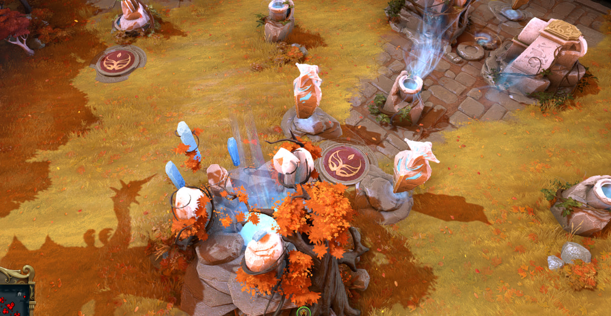
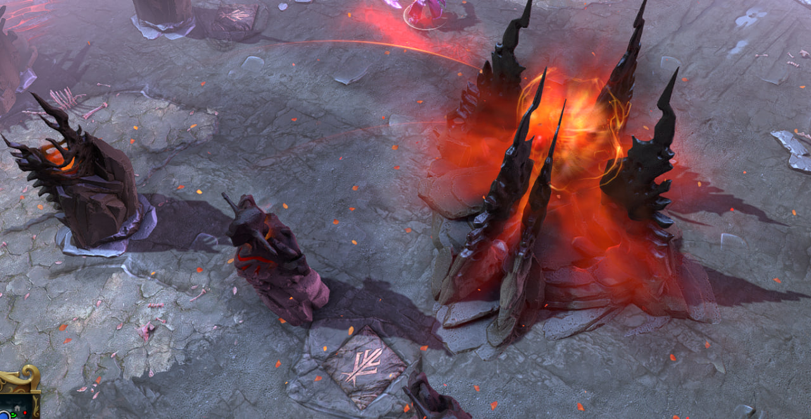
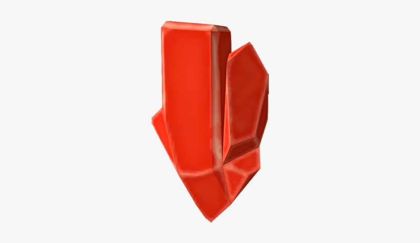
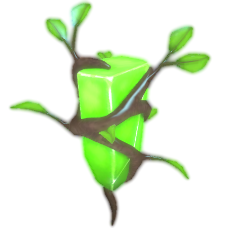
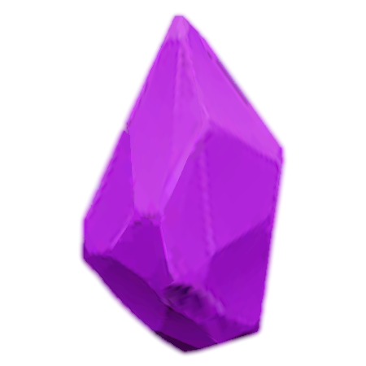
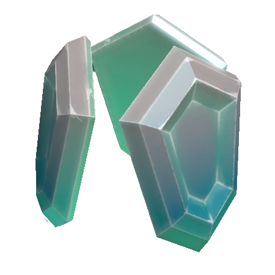

Цель игры
Основная цель в Dota 2 — уничтожить главное здание на базе противника, которое называется "Трон".
Шаг 1: Уничтожить вражеские башни на линиях(тавер 1,тавер 2).
Шаг 2: Уничтожить казармы (бараки), чтобы усилить своих крипов.
Шаг 3: Прорваться на базу врага и сломать башни у Крепости.
Шаг 4: Уничтожить Трон.
Карта в Dota 2 разделена рекой на две симметричные части. Каждая команда начинает на своей базе, расположенной в углу карты. У каждой стороны свой уникальный визуальный стиль.
Силы Света (The Radiant)
База Сил Света находится в левом нижнем углу карты. Это светлая, зеленая и цветущая территория.
Силы Тьмы (The Dire)
База Сил Тьмы расположена в правом верхнем углу. Это темная, мрачная и безжизненная земля.
Роли и линии на карте
Стандартная команда в Dota 2 состоит из пяти игроков, каждый из которых выполняет свою роль и обычно играет на определенной линии.
- Керри 1 позиция (Carry): Играет на "легкой линии" (Safelane). В начале игры слаб, его задача — фармить золото и опыт, чтобы стать главной ударной силой в конце игры.
- Мидер 2 позиция (Midlaner): Играет на центральной линии (Midlane) 1 на 1. Быстро получает уровни и оказывает влияние на всю карту в середине игры.
- Оффлейнер 3 позиция (Offlaner): Играет на "сложной линии" (Hardlane). Обычно это прочный герой, задача которого — мешать вражескому керри и инициировать драки.
- Поддержка 4-5 позиции (Supports): Два игрока, которые помогают своим основным героям. Они не фармят крипов, а вместо этого ставят варды (обереги) для обзора карты, помогают в убийствах и защищают союзников.
Руны
Руны — это специальные усиления, которые появляются на реке в определенных местах карты.
 Руна Двойного урона (Double Damage): Значительно увеличивает физический урон героя.
Руна Двойного урона (Double Damage): Значительно увеличивает физический урон героя.- Руна Ускорения (Haste): Дает максимальную скорость передвижения.
- Руна Регенерации (Regeneration): Быстро восстанавливает здоровье и ману.
 Руна Невидимости (Invisibility): Делает героя невидимым.
Руна Невидимости (Invisibility): Делает героя невидимым. Руна Богатства (Bounty): Дает золото всей команде.
Руна Богатства (Bounty): Дает золото всей команде.- Руна Волшебства (Arcane): Снижает перезарядку способностей и расход маны.
- Руна Щита (Shield): Создает барьер, поглощающий урон.
 Руна Иллюзий (Illusion): Создает две контролируемые иллюзии героя.
Руна Иллюзий (Illusion): Создает две контролируемые иллюзии героя.